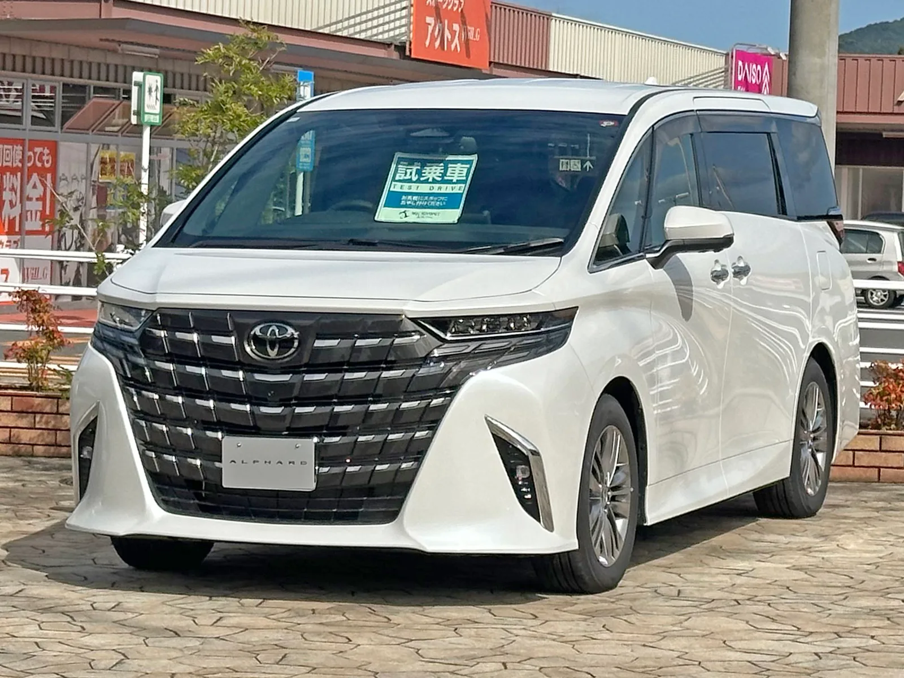
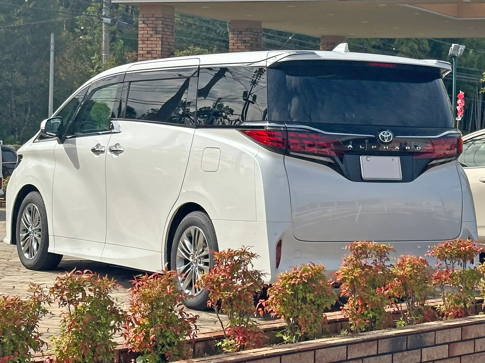
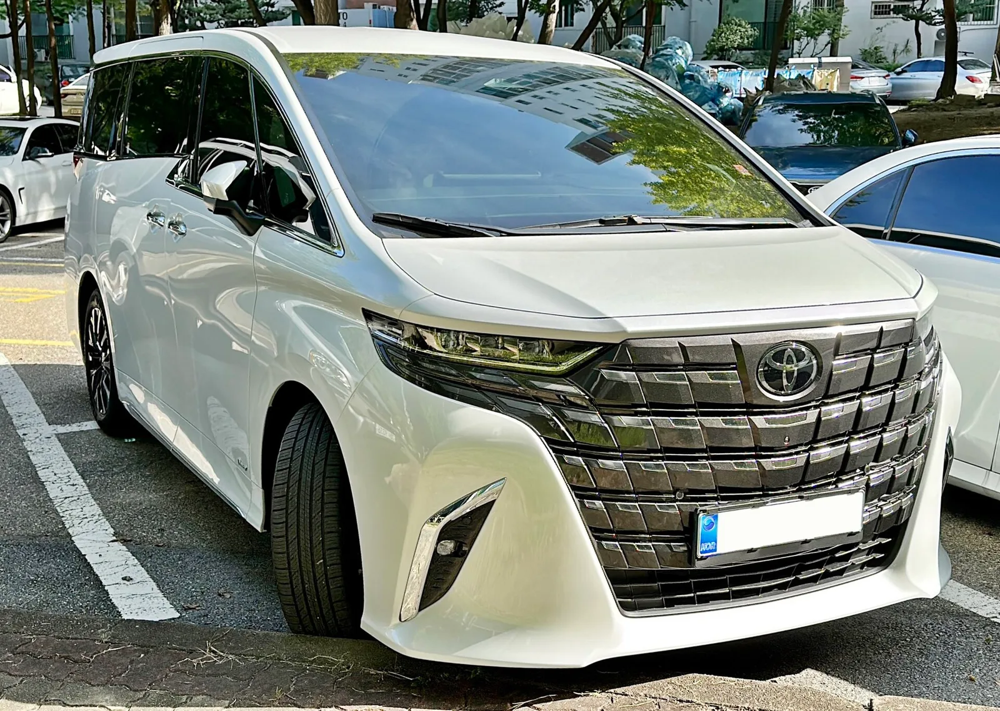
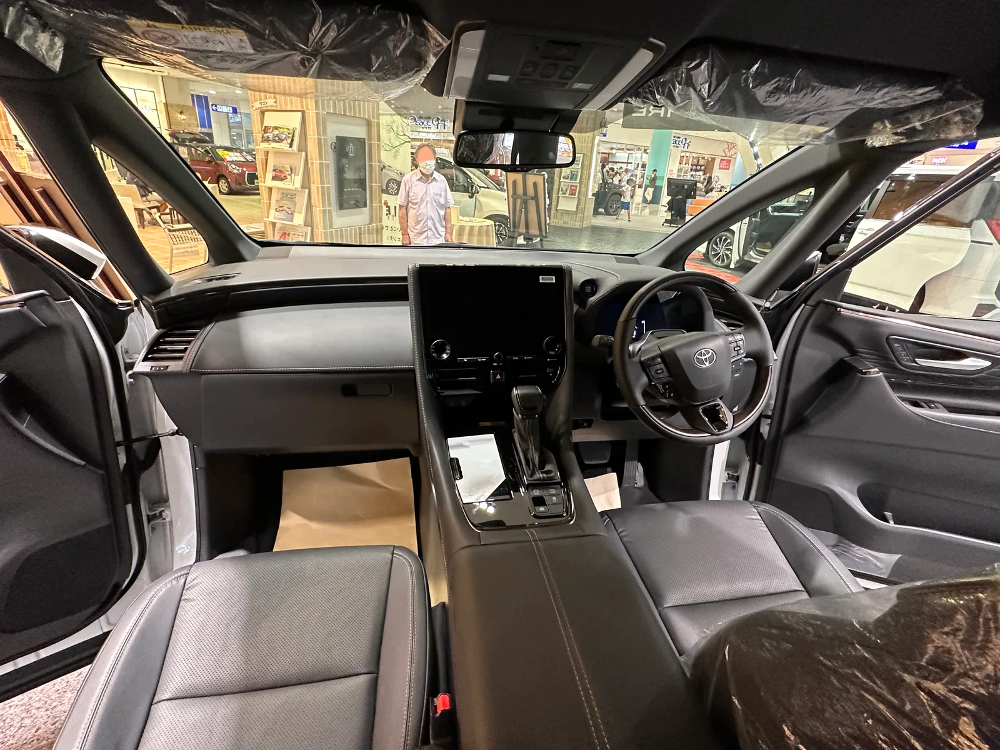
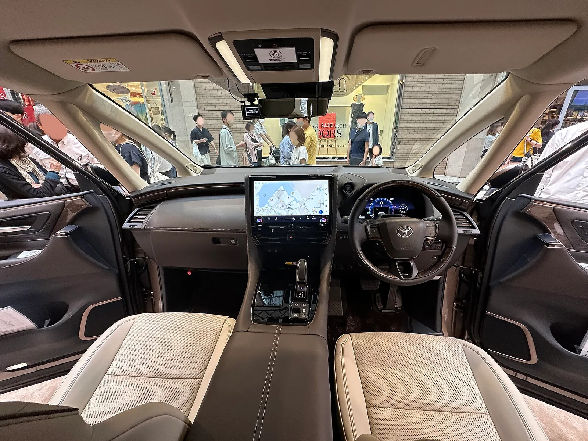
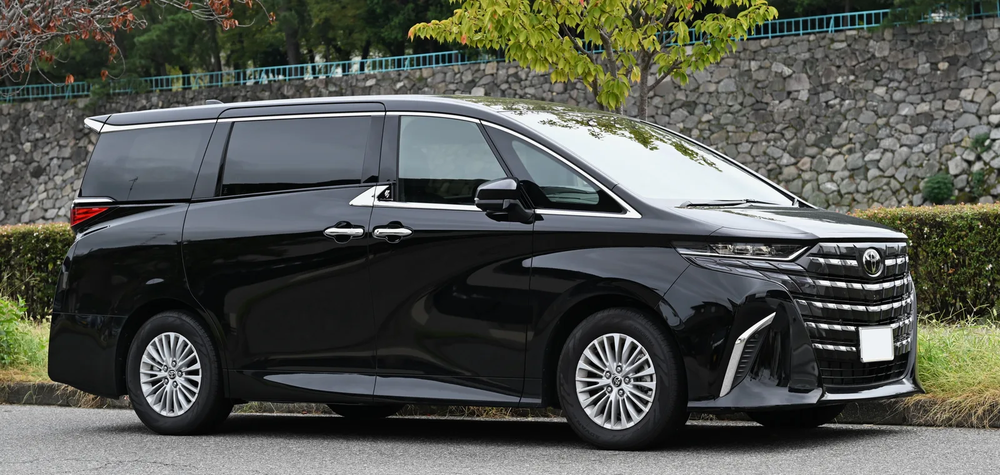
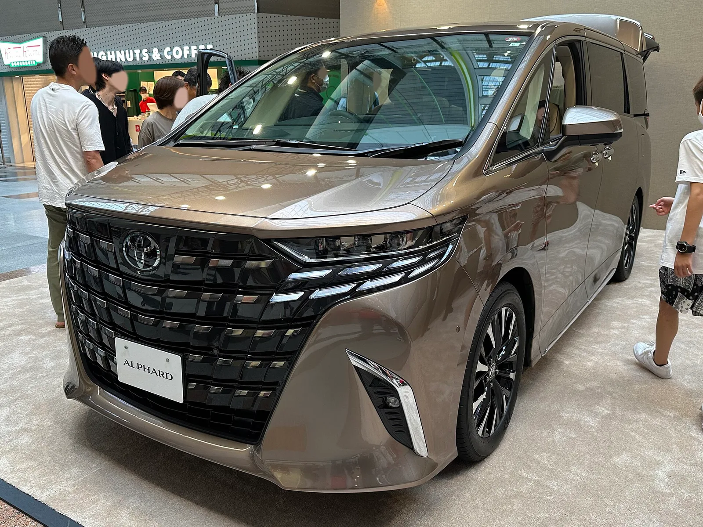

▲ 토요타의 럭셔리 미니밴 알파드. 2열은 리무진급 편안함을, 1열은 스포츠 세단에 가까운 주행감을 제공한다는 평가다 ⓒ Wikimedia Commons

▲ 토요타 알파드 4세대 모델의 후면부 ⓒ Wikimedia Commons
2열에 앉으면 리무진, 1열에 앉으면 스포츠 세단. 한 대의 미니밴이 이렇게 다른 두 개의 얼굴을 동시에 보여줄 수 있을까.
토요타의 프리미엄 미니밴 알파드를 시승했다. 지피코리아 시승기를 종합하면, 이 차는 국내 미니밴 시장의 절대 강자인 카니발·스타리아의 텃밭에서 점유율을 조금씩 넓혀가고 있다. 실제로 월간 판매 대수는 100대 수준에서 최근 180대 이상으로 늘었고, 이 추세라면 연간 1,500대 판매도 가능하다는 관측이 나온다.

▲ 토요타 알파드 4세대(AH40) 모델의 전면부. 국내에는 프리미엄·이그제큐티브 2개 트림으로 판매된다 ⓒ Wikimedia Commons
1. 2.5L 하이브리드 250마력, 그런데 '스포츠 세단' 같다고?
알파드의 심장은 직렬 4기통 2.5리터 자연흡기 가솔린 엔진과 e-CVT의 조합이다. 여기에 전동모터 3개가 더해지는데, 이 가운데 하나는 후륜에 단독으로 배치돼 전륜 기반 상시사륜(E-Four) 구동을 구현한다. 시스템 총출력은 250마력이다. 큰 차체의 미니밴이라는 점을 감안하면 스펙만으로는 여유롭다고 보기 어려운 수치지만, 실제 체감은 다르다는 게 시승기의 평가다.
가장 눈에 띄는 대목은 가속 시 피칭(차체 앞뒤 흔들림)이 거의 없다는 점이다. 시승기는 "직선구간 고속주행의 재미는 쏠쏠하다. 특히 피칭없이 미끌어지듯 가속하는 재미는 2열 탑승객들까지 감탄할 정도"라고 전했다. 대형 미니밴에서 좀처럼 기대하기 어려운 주행 질감이다.
| 항목 | 내용 |
|---|---|
| 엔진 | 직렬 4기통 2.5L 자연흡기 가솔린 + e-CVT |
| 전동모터 | 3개(후륜 단독 구동 모터 포함) |
| 구동방식 | 전륜 기반 상시사륜(E-Four) |
| 시스템 총출력 | 250마력 |
| 실연비(시승 기준) | 14km/L 이상 |
| 전장 × 전폭 | 5,005mm × 1,850mm |
서스펜션도 이 차의 이중적인 성격을 뒷받침한다. 시승기에 따르면 주파수 감응형 댐퍼가 적용돼 "마치 에어서스펜션의 감성을 전달"하며, 고속 주행 중에도 "뛰어난 수평 유지능력"을 보여준다. 무게중심이 높은 미니밴 특성상 코너링에서 불안할 법도 하지만, 시승기는 "높은 무게중심에도 탄탄한 코너링 실력에 놀라운 수준"이라고 평가했다.
📍 정숙성은 어느 정도인가
도심 중저속 구간에서는 전기모터가 주된 구동력을 담당한다. 시승기는 "도심의 중저속 구간에선 전기모터의 파워가 마치 전기차처럼 거대한 알파드를 끌어줘 높은 정숙성을 뽐낸다"고 전했다. 큰 차체의 미니밴이 저속에서 EV에 가까운 정숙성을 낸다는 점은 눈에 띄는 대목이다.
2. 2열은 '비즈니스 클래스' — VIP 리무진의 조건

▲ 비즈니스 클래스를 연상시킨다는 평가를 받는 알파드의 2열 시트 ⓒ Wikimedia Commons
알파드의 존재 이유는 사실 2열에 있다. 시승기는 2열 시트에 대해 "비즈니스 클래스를 연상시키는 2열 시트는 묵직하면서도 푹신하게 설계돼 기존 어떤 시트와 견줘도 편안하다"고 평가했다. 암레스트에는 분리형 리모컨이 내장돼 있고, 천장 오버헤드 콘솔에는 각종 조작 버튼이 배치돼 마치 항공기 비즈니스석이나 의전용 리무진의 조작계를 연상시킨다.
✅ 알파드가 '의전용 리무진 대체재'로 꼽히는 이유
· 비즈니스 클래스급 2열 시트, 암레스트 분리형 리모컨
· 천장 오버헤드 콘솔의 통합 조작 버튼
· 전폭 1,850mm — 카니발(1,955mm)보다 좁아 도심·의전 동선에 유리
· 저속 구간 EV급 정숙성으로 승차감 저해 요소 최소화
결국 알파드가 노리는 지점은 명확하다. 뒷좌석 승객에게는 대형 세단이나 의전용 리무진 못지않은 편안함을, 운전석에는 그보다 훨씬 민첩한 주행 질감을 동시에 제공하겠다는 것이다.

▲ 알파드 1열 운전석에서 바라본 대시보드. 대형 인포테인먼트 화면과 계기판이 배치돼 있다 ⓒ Wikimedia Commons
3. 가격과 포지셔닝 — 카니발·스타리아와 다른 길

▲ 측면에서 본 알파드. 전장 5,005mm의 대형 미니밴 실루엣이지만 전폭은 카니발보다 좁다 ⓒ Wikimedia Commons
가격은 결코 저렴하지 않다. 국내 판매 트림 중 프리미엄 모델은 8,678만원이며, 상위 이그제큐티브 모델은 1억원대에 형성돼 있다. 시승기는 이 가격대를 두고 "국내엔 카니발과 스타리아가 버티고 있다. 5000만원대면 훌륭한 하이브리드 국산 미니밴을 살 수 있다"고 지적하며, 알파드가 절대적인 가성비로 승부하는 차가 아니라는 점을 분명히 했다.

▲ 상위 트림인 이그제큐티브 라운지. 프리미엄 트림과 달리 회전형 캡틴시트와 2열 패신저 디스플레이가 포함된다 ⓒ Wikimedia Commons
두 트림의 차이는 가격만이 아니다. 프리미엄은 2열에 고정형 테이블과 캡틴시트를 갖췄지만 시트 회전 기능과 2열 패신저 디스플레이는 빠져 있고, 이그제큐티브는 좌우로 회전하는 캡틴시트와 2열 전용 디스플레이까지 포함한다. 즉 프리미엄은 '입문형 리무진', 이그제큐티브는 '풀옵션 의전차'에 가까운 셈이다.
그럼에도 알파드를 찾는 수요는 늘고 있다. 시승기에 따르면 월간 판매 대수는 100대 수준에서 최근 180대 이상으로 늘었고, 이 흐름이 이어지면 연간 1,500대 판매도 가능할 것으로 전망된다. 국산 미니밴과 정면으로 가격 경쟁을 하기보다, 의전용 세단을 대체할 프리미엄 미니밴이라는 별도의 시장을 겨냥하고 있는 셈이다.
4. 요약
토요타 알파드는 2.5L 가솔린 하이브리드(시스템 총출력 250마력)와 전륜 기반 상시사륜을 갖췄으며, 주파수 감응형 댐퍼로 에어서스펜션급 승차감을 구현했다. 실연비는 14km/L 이상, 저중속 구간에서는 전기차에 가까운 정숙성을 보인다.
2열은 비즈니스 클래스급 리무진 시트, 1열은 피칭 없는 가속과 탄탄한 코너링을 갖춘 스포츠 세단에 가까운 주행감을 낸다. 전폭은 1,850mm로 카니발(1,955mm)보다 좁아 도심·의전 동선에도 유리하다.
가격은 프리미엄 트림 8,678만원, 이그제큐티브 트림 1억 49만원으로 카니발·스타리아 대비 확연히 높다. 이그제큐티브는 회전형 캡틴시트와 2열 패신저 디스플레이가 추가돼 프리미엄과 차별화되며, 알파드는 절대적인 가성비보다 의전용 세단을 대체할 프리미엄 미니밴이라는 독자적 포지션으로 국내 판매를 늘려가고 있다.